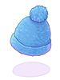
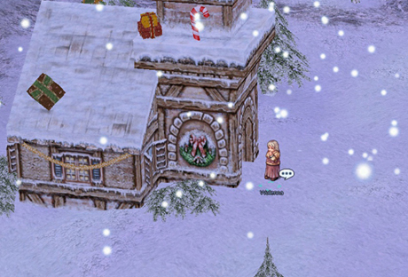
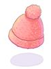

Par:MageGaHell
Description:
Quête custom pour obtenir des versions colorées du Beanie (Fur Hat): Blue Beanie (5236), Gray Beanie (5235) et Pink Beanie (5237).
Description étendue: La quête comporte deux parties: 1) activation de la quête par un jeu de cache-cache 2) apporter des objets nécessaires à la création du chapeau.
Blue Beanie : 1 Beanie |
 |
 |
Gray Beanie : 1 Beanie |
 |
|
Pink Beanie : 1 Beanie |
 |